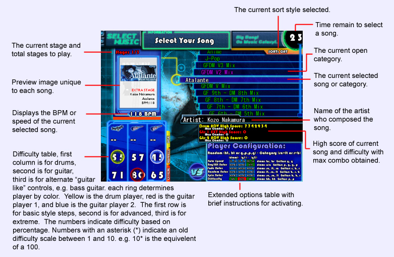

|  | |||
|
Here you will select what song you wish to play. Scroll through them by pressing up or down on the
keyboard, snare or lotom on the drum pad, red or blue on the guitar. Press start on any one of the
controllers to begin play. Items in green are categories, the current open category displays in
purple. Song display in white or blue. Blue songs are long versions and take 2 songs, you must have
2 songs left or more to play these songs. The difficulty table displays what current difficulty you are on as described in the above image. To change difficulties, follow the instructions in the extended options table. Snare twice will toggle difficulty for drums. Pick twice for guitars. For guitars pressing pick, green, green, then pick will toggle guitar style. The extended options table has multiple options that are not normally selectable in the options menu. E.G. rotating, fading, and randomizing notes. These options are toggable by pressing the key combinations displayed in the table. Here are a list of definitions for commonly used abbreviations:
At first this system may seem overwhelming, but with time you will come to understand the system and use these tools and options to become a better player. If you are a beginner try to stay below 20% difficulty or 2* until you feel confident to handle faster and more complicated songs. |